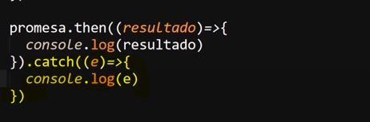

operaciones Asincronas
Se tratan de macanismós y bloques de codigos dedicados espesificamete para ejecutarse en aquellas ocasiones en las que los datos a utilizar sean obtenidos con cierta demora por el navegador, en otras palabras a diferencia de los mecanismos normales los cuales se ejecutan inmediatamete sin importar el si los datos estan listos o no las operacioes asincronas esperan hasta que se obtienen los datos requeridos, permitiendo asi operaciones que requieren de cierta demora como lo son por ejemplo: la carga de archivos complejos o consultas a bases de datos.
Promesas
Se tratan de objetos JavaScrip particulares, estos se distinguen de otros ya que estas se utilizan para representar algunos aspectos de las operaciones asincronas.
Para lo cual las promesas poseen dos "calbacks":
En otras palabras las promesas se dibiden en dos tipos de bloques de codigo, el bloque "resolve" define el que acciones se realizaran al concluirse la operación asincrona, mientras que el bloque "reject" define el que codigo se ejecutara en el caso de que la operación asincrona fracase
Para lo cual la estructura de la pormesa se componene de la declaración de un nuevo objeto el cual contendra un calback como constructor, el cual a su vez tendra otros dos calbacks los cuales corresponden a "resolve" y "reject", en otras palabras para utilizar una promesa esta debe declararse de la misma forma que lo hace un objeto normal, y se utiliza un calback para llamar a las funciones "resolve" y "reject".
Ejemplo
Resultado
Nota: Los calbacks internos de la promesa ("resolve" y "reject") tambien pueden ser definidos con los nombres de "res" y de "rej".
Como se puede ver las promesas no son un objeto común, esto ya que poseen barias caracteriticas particulares, una de estas es que sus datos se encuentran encapsulados, por lo cual no es posible acceder a estos por los medios de un objeto normal, para estos casos se utiliza ".then", el cual es un metodo de los bloques "resolve", por lo tanto el metodo ".them" permite obtener los datos de la promesa, pero solo en caso de que el bloque "resolve" sea el que se ejecuto.
Un ultimo aspecto del metodo ".then" es que este unicamete recibe "calbacks" como parametros, lo que significa que se utiliza una función flecha para definir la función "calback":
Ejemplo
Resultado
Por otro lado si se ejecuta el bloque del "reject" el navegador lanzara un error por consola, debido a esto surge la necesidad de manejar el error, para esto se utiliza el metodo ".catch", el cual al igual que en la estructura "try catch" este va a recibir el error permitiendo el manejo de este.
Ejemplo

Resultado
Nota: Las promesas son funciones asincronas, por lo tanto a diferencia de otras esta esperara a obtener los datos requeridos para ejecutarse.
Await Async
Se trata de un complemento para facilitar el uso de las promesas, su proposito consisten en ser el bloque de codigo que espera, recibe y almacena en variable los resultados de las promesas,en pocas palabras "await y async" se trata de una función especializada en obtener los datos de las promesas.
Para dferenciarla de las funciones comunes se utiliza la palabra clave "async", la cual indica que se trata de una función asincrona, por lo tanto esta no se ejecutara hasta recibir los datos necesarios, existen dos formas de declarar una función como asincrona, las cuales son:
Incorporando Async en la Estructura de Flecha
Incorporando Async en la Estructura Clasica
El segundo elemento se trata de la palabra clave "await", la cual tiene la función de de indicar que es se debe esperar el resultado de la promesa que le sigue a esta, para continuar con la ejecución de la función aincrona, de ese modo se garantizara que se mantenga la secuencia deseada en la ejecución del codigo de la función, para incorporar "await" en una función asincrona esta palabra clave se incorpora justo antes del llamado a la promesa, para indicar que el siguiete elemento se trata del elemento al que hay que esperar:
Ejemplo
Una segunda función del await es que por si solo este elemento permite acceder a los datos encapsulados que son retornados por la promesa, sin la utilización del metodo ".then()".
Ejemplo Completo del "Await Async" con la promesa
Resultado
En este ejemplo la promesa recibe un texto y lo retorna con un retraso aleatorio entre 0ms y 200ms, esto para emular el como el tiempo de espera hasta que una promesa se complete puede variar, por otro lado la función "mostrarData" realiza tres llamados a la promesa "obtenerInformacion" con diferentes dats en cada llamado, y luego procede a imprimir los resiltados de las promesas en consola.
En este ejemplo la promesa retorna los datos con cierto retraso, sin embargo el elemento await garantiza que la función asincrona no continue ejecutandose hasta que la promesa que esta en vigencia retorne su resultado, por lo que simpre se tendra el control de que los elementos se ejecuten cuando se indique a diferencia de un bloque de codigo similar, pero que se base en la utilización de ".then()", en el cual la función mostrara los datos apenas los obtiene por lo que se mostraran en desorden.